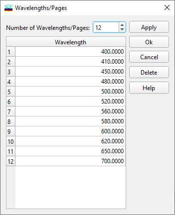

Target Wavelengths
Target Wavelengths
Navigation: OptiLayer Menu Commands > Data Menu > Target Editor >
Target Wavelengths
` <idh_modify_angles.html>`__ ` <target_editor.html>`__ ` <target_generator.html>`__
You can launch this dialog from the Target Editor in Angular mode when you need to add or exclude wavelengths at which targets are specified.

Specify the desired number of wavelengths in the field labeled Number of Wavelengths/Pages. This action will automatically add or delete the necessary number of rows in the list box. After editing the wavelength values, click the Apply button to apply the changes to the currently edited target.
Clicking OK also applies the changes and closes the Wavelengths/Pages dialog. If you wish to discard the changes, click Cancel. Additionally, you can utilize the Spreadsheet Editing Tools from the main toolbox for convenient editing.